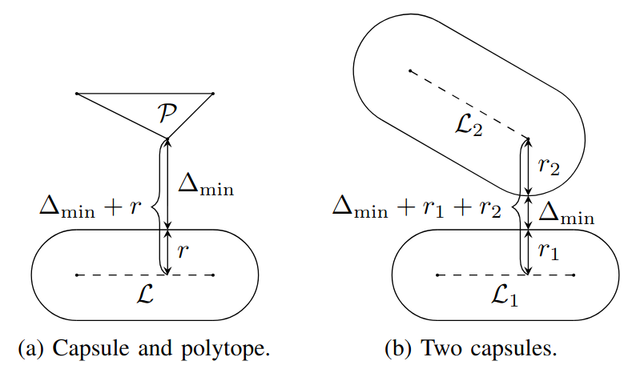
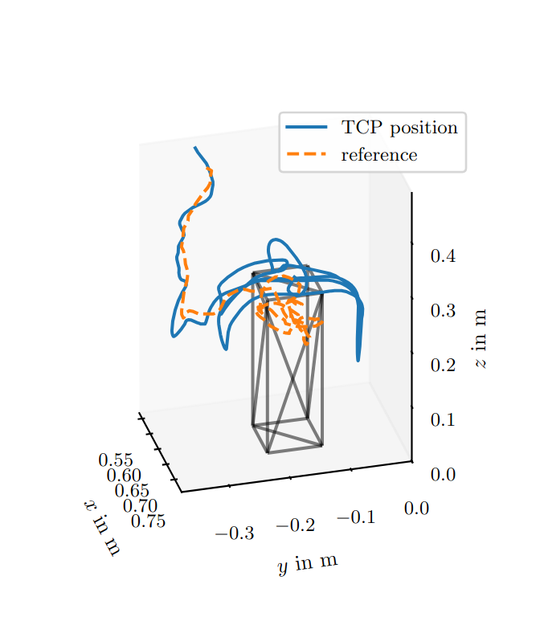
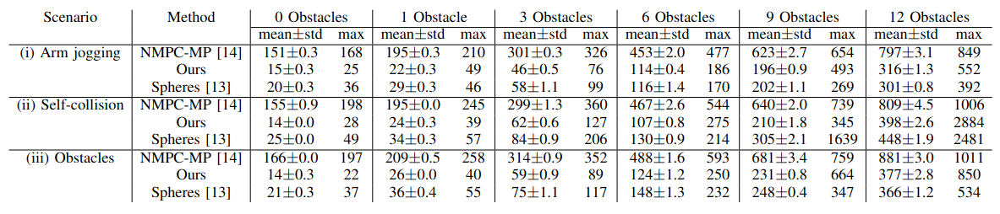

Abstract
In teleoperation, the human operator typically controls only the end-effector pose, which often leads to self-collisions of the manipulator and collisions with environmental obstacles, since joints and links are not controlled individually. A common strategy to mitigate this issue is to enhance the operator’s input using optimal-control-based trajectory planning. As derivative-based solvers require differentiable constraints, existing approaches either approximate robots and obstacles with spheres, reducing geometric accuracy, or approximate derivatives, degrading convergence and increasing computation times. We address these limitations by adapting a recent formulation of differentiable collision-avoidance constraints, based on duality in convex optimization, to the teleoperation setting. The robot is approximated with capsules and the environment with polytopes. We compare the resulting trajectory planning method against state-of-the-art techniques in simulation with varying numbers of obstacles and evaluate it on a UR5e manipulator in a real-world teleoperation test. Results show that our approach achieves lower computation times while enabling more accurate obstacle modeling, leading to smoother and collision-free end-effector teleoperation.
Video Presentation
Robotic Teleoperation Using Motion Tracking Devices Like VR-Controllers
Robotic teleoperation enables human operators to carry out tasks in remote or hazardous environments such as nuclear power plant dismantling, space or undersea applications. The utilization of low-cost virtual reality controllers has emerged as a viable alternative to costly, specialized input devices. However, they only allow the operator to control the end-effector pose, which complicates the avoidance of self-collisions and obstacle collisions involving the other links of the remote robot arm.
We present an optimal control formulation for teleoperation that contains collision-avoidance constraints for accurate geometric robot and environment models.
Capsule-Based Collision Constraints

Treating the center-lines of capsules as two-vertex polytopes allows us to use a recent approach for polytope-based collision avoidance. This yields differentiable constraints encoding collision-freeness for the collision pairs capsule-polytope, which we use for obstacle avoidance, and capsule-capsule, which we use for self-collision avoidance.
Optimal Collision-Free Trajectory Planning

Using the newly derived constraints for capsule-based collision avoidance, we formulate an optimal control problem and numerically solve it repeatedly in a model predictive control (MPC) manner. Each time the MPC is run, a smooth trajectory for the joint angles is determined over a finite time horizon. It minimizes the deviation between the predicted reference (determined by the VR-controller) and the pose of the robotic manipulator's end effector (determined via forward kinematics). The trajectory is collision-free and conforms to the physical model and limits of the manipulator.
Results

Because we do not need to query an additional collision checking or distance measurement algorithm during optimization, our method outperforms the state-of-the-art method in terms of computation time. For self-collision avoidance and avoidance of one polytopic obstacle, the computation time stays below 50 ms, making it real-time capable at 20 Hz, which was verified in real-life experiments.
BibTeX
@article{GrobbelSchneiderTeleoperation2026,
title={Real-Time and Accurate Collision-Free Teleoperation via Differentiable Constraint-Based Trajectory Planning},
author={Max Grobbel and Tristan Schneider and Daniel Fl{\"o}gel and S{\"o}ren Hohmann},
journal={2026 IEEE International Conference on Robotics and Automation (ICRA)},
year={2026}
}